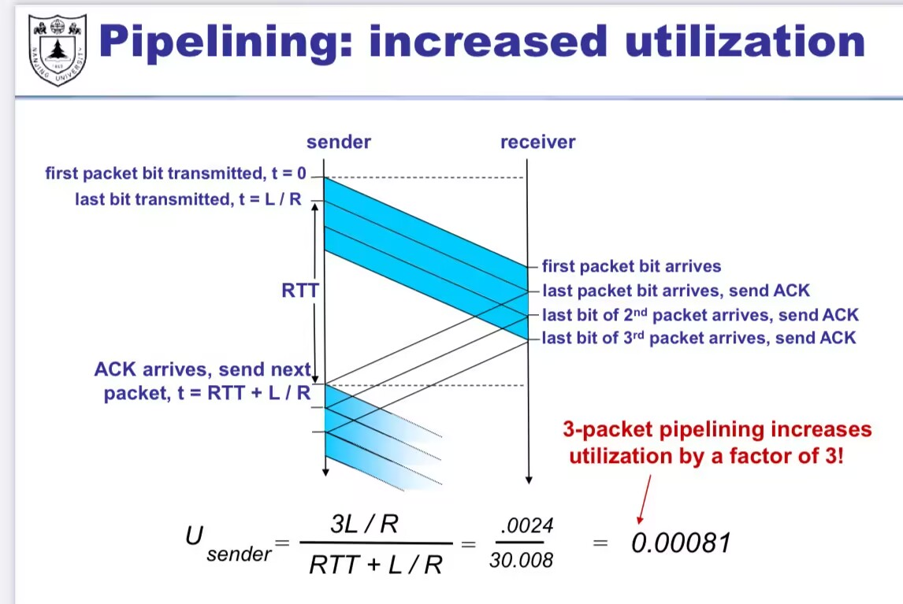

运输层¶
无连接的：connectioness 不区分 IP，只关心 port - UDP is connectionless
什么是 Socket？¶
socket: software abstraction for an application process to exchange network messages with the (transport layer in the) operating system
- Transport layer addressing
- Two important types of sockets
- UDP socket: TYPE is SOCK_DGRAM
- TCP socket: TYPE is SOCK_STREAM
- 对 TCP 服务器的 socket 理解：TCP 需要两个 socket, 一个是欢迎套接字（握手），一个是连接套接字。
Connection less
Connection-oriented demux 4 个要素确定一条链接： - Host IP address - Host port - Client IP address - Host port - Multiplexing (Mux) Gather and combining data chunks at the source host from different applications and delivering to the network layer
- Demultiplexing (Demux) Delivering correct data to corresponding sockets from multiplexed a stream
怎么构建 Reliable Transport¶
- Mechanics to cope with bad events
- CheckSum: a simple way to detect corruption
- ACKs: (ACKnowledge) receiver tell sender that it received packet
- NACK: receiver tell sender that it didn’t receive packet
计算传输时间¶
E.g. 1 Gbps link, 15 ms prop. Delay, 8000 bit packet $$ D_{trans}=\frac{L}{R}=\frac{{8000 bits}}{10^{9}bits/\sec}=8microsecs $$ If \(RTT=30ms\) Round-Trip-Time: - 一个短分组从客户到服务器然后再返回客户所花费的时间 - 包括分组 propagation delay, queue delay, and packet process delay 在本题的例子里，RTT 严重拖累了效率，我们想到改良方法
Pipelining: increase dutilization¶

Sliding window¶
What is sliding window¶
It decides which packets can sender send.
- Window=set of adjacent sequence numbers
- The size of the set is. The window size
- General idea: send up to n packets at a time
- Sender can send packets in its window
- Receiver can accept packets in its window
Sliding window protocols¶
- Resending packets: 2 canonical approaches
- Go-Back-N(GBN)
- 回退 N 帧，只要不是正确按序接受，就重传上一个正常之后的所有。
- Selective Repeat(SR) Many variants that differ in implementation details
- Go-Back-N(GBN)
example¶
提供一个 example 比较 GBN、SR 和 TCP（无延时的 ACK）。假设对所有 3 个协议的超时值足够长，使得 5 个连续的数据报文段及其对应的 ACK 能够分别由接收主机（主机 B）和发送主机（主机 A）收到（如果在信道中无丢失）。假设主机 A 向主机 B 发送 5 个数据报文段，并且第二个报文段（从 A 发送）丢失。最后，所有 5 个数据报文段已经被主机 B 正确接收。
a. 主机 A 总共发送了多少报文段和主机 B 总共发送了多少 ACK？它们的序号是什么？对所有 3 个协议回答这个问题。 b. 如果对所有 3 个协议超时值比 5 RTT 长得多，则哪个协议在最短的时间间隔中成功地交付所有 5 个数据报文段？
a. - GBN 对于 GBN，其会重传异常之后的所有报文。 所以 A 发送 1+4+4=9 个 segments B 正常接受 1，ack 1 回复 3, 4, 5, ack 3, 4, 5 重传的 2, 3, 4, 5，ack 2, 3, 4, 5 总共 9 segments ; 8 ack - SR 第二个报文丢失后，接收方缓存 3, 4, 5，回传的 ACK 序号分别为 1 3 4 5，第一轮 4 个 ACK。 第二轮发送方重传 2，接收方回传的 ACK 为 2，第二轮 1 个 ACK
总共 6 segments 5 ack - TCP 第二个 segment 丢失后，接收方缓存 3, 4, 5，ack: 2, 2, 2, 2 3 个冗余 ack，进入重传，发送方重传 2 接收方处理排序后，回复 ack6 表示已完成整理。 总共 6 segments 5 ack
b. TCP 最快。因为 TCP 没有“傻傻”的等待 2 的正确传输，而是先缓存处理后面的，再冗余 ack 后快速进入重传。
UDP CheckSum¶
Check sum：将 segment 各位加和，获得一个 16 位的 binary numbers，并取反。 然后，接收端也进行加和，与 Checksum 相加如果等于 0，就说明校验成功。（上一步取反是为了这一步比较“校验和相同”能比较简单.）
TCP¶
Transmission Control Protocol
TCP Abstraction¶
TCP delivers a reliable, in-order, byte stream - Reliable: TCP resends lost packets (recursively) - Until it gives up and shuts down connection - In-order: TCP only hands consecutive chunks of data to application - Byte stream: TCP assumes there is an incoming stream of data, and attempts to deliver it to app
TCP header:¶
必考¶
Size: 20 byte

- 序列号 (Sequence number) Starting byte offset of data carried in this segment
TCP segment¶

Sequence numbers¶
TCP 序列号（Sequence Number）是 TCP 协议中用于跟踪数据传输的重要机制。每个 TCP 会话的每一端都包含一个 32 位的序列号，用于跟踪该端发送的数据量。序列号在 TCP 数据包的头部中，每个数据包都包含一个序列号，用于标识该数据包在整个数据流中的位置
1) ISN (Initial Sequence Number), k bytes 2) \(Sequence\;number\) = 1 st byte in segment = \(ISN+k\)
Loss with cumulative ACKs¶
When data loss happened, assume 5 th packet (seqno 500) is lost, but no others, then ACKs will be: 200,300,400,500, (seqno:600), 500, (seqno:700)...
Sender: always get ACK 500 ever since 5 th packet loss Receiver: get packet seqno: 600,700... But send ACK 500
BUFFER the out-of-sequence packets
Introduce: fast retransmit¶
Duplicate ACKs trigger early retransmission
具体而言：如果 sender hasn' t received an ACK by timeout, retransmit hte first packet in the window
掉包问题解决与拥塞控制¶

总体概括¶
- TCP-Tahoe
CWND=1 on 3 dupACKs
- TCP-Reno
CWND=1 on timeoutCWND=CWND/2 on 3 dupACKs
- TCP-newReno
- TCP-Reno+improved fast recovery
- TCP-SACK
- Incorporates selective ACKnowledge
RENO 算法¶
慢启动
if CWND <ssthresh: CWND+=1 slow start phase
Else: CWND =CWND+1/CWND
dupACK：计算掉包。一旦发生三次重复 ACK 认为是丢包
if dupACKcount >= 3 进行快重传(fast transmission)
Problem: 这个算法在偶发丢包时候，性能特别差
NEW Reno (Jacobson's Reno)¶
必考¶
在 Reno 基础上 利用快恢复算法(fast recovery) - 慢启动 - 拥塞避免阶段 - 快重传
近年的算法¶
Cubic: 相对温和 BBR: 比较 aggressive
各种窗口 (wnd)¶
TCP Window 与 cwnd 的区别¶
TCP 是一种流量控制协议，通过窗口机制（Window）动态调节数据发送速度。窗口机制主要包括 接收窗口（rwnd） 和 拥塞窗口（cwnd），它们共同决定了 TCP 传输的效率。
1. TCP Window 概念¶
TCP 的 Window（窗口） 是指接收端和发送端之间用于控制数据流量的机制，确保发送方不会超出接收方的处理能力。窗口的大小由两部分控制：
-
接收窗口（
rwnd）：- 由接收端通告给发送端。
- 表示接收端当前缓冲区可以接收的字节数。
- 发送端根据
rwnd确定能发送的数据量，避免接收方缓冲区溢出。 -
拥塞窗口（
cwnd）： -
由发送端动态维护，用于实现拥塞控制。
- 表示网络路径上允许的未确认数据量。
- 随网络拥塞情况调整，以避免过度占用网络带宽。
最终允许发送的数据窗口大小：
2. cwnd（拥塞窗口）¶

¶
(1) 定义
cwnd 是发送端维护的一个动态值，用来实现拥塞控制策略，反映网络当前的承载能力。cwnd 的值会随着网络状态动态变化，以下是它的变化机制：
(2) 增长机制¶
-
慢启动（Slow Start）：
- 初始时，
cwnd通常较小（例如 1 个 MSS，最大分段大小）。 - 每次收到 ACK，
cwnd值按指数增长，直到达到慢启动阈值（ssthresh）。- 注释：这里的指数增长指的是在一个 RTT 内的变化。虽然
cwnd收到一个ACK增长 1，但在一个RTT内，其窗口翻了一番。
- 注释：这里的指数增长指的是在一个 RTT 内的变化。虽然
- 防止在网络状态未知时过快占用带宽。 增长机制： \(cwnd \leftarrow cwnd + MSS\)
- 初始时，
-
拥塞避免（Congestion Avoidance）：
- 当
cwnd超过ssthresh后，进入线性增长阶段。 - 每轮次（RTT）增加一个 MSS，尽量避免触发拥塞。 增长机制：
- 当
\(\text{cwnd}\leftarrow \text{cwnd}+ \frac{\text{MSS}^2}{\text{cwnd}}\)
(3) 缩减机制¶
- 丢包或超时：
- 如果检测到丢包（通过超时或收到重复 ACK），认为网络可能拥塞，减小
cwnd：- 严重丢包：
cwnd重置为 1 个 MSS，ssthresh更新为当前cwnd值的一半。- 发生超时
- 轻微丢包：冗余 ack
- 使用快速重传和快速恢复（Fast Retransmit & Fast Recovery），将
cwnd减小为一半，然后逐步恢复。
- 使用快速重传和快速恢复（Fast Retransmit & Fast Recovery），将
- 严重丢包：
- 如果检测到丢包（通过超时或收到重复 ACK），认为网络可能拥塞，减小
3. rwnd（接收窗口）¶
rwnd 是接收端根据自身的缓冲区动态计算并通告给发送端，用于流量控制。
- 初始大小：
- 一般由接收端的缓冲区大小决定。
- 动态调整：
- 随着接收端处理数据和缓冲区的释放，
rwnd会不断变化，并通过 ACK 包告知发送端。 - 如果接收端处理速度跟不上，可能会减小
rwnd，甚至变为 0（零窗口）。
- 随着接收端处理数据和缓冲区的释放，
4. 总结：cwnd 和 rwnd 的关系¶
| 属性 | cwnd |
rwnd |
|---|---|---|
| 定义 | 发送端维护的拥塞窗口 | 接收端通告的接收窗口 |
| 作用 | 避免网络拥塞 | 避免接收端缓冲区溢出 |
| 控制方向 | 发送端流量控制 | 接收端流量控制 |
| 调整机制 | 由网络状态动态调整（丢包、ACK） | 由接收端缓冲区大小动态调整 |
| 窗口大小 | 初始值小，逐渐增长 | 初始值较大，随接收能力变化 |
两者共同作用，发送端发送的数据量受两者的最小值限制： $$ \text{实际窗口大小} = \min(\text{cwnd}, \text{rwnd}) $$
在丢包发生时候的流量计算¶
- 平均吞吐量如何计算？ $$ \text{Troughput}=\sqrt{ \frac{3}{2} } \frac{{1}}{RTT\sqrt{p }} $$
- TCP throughput is swings between \(\frac{W}{2}\) to \(W\)
传输速率如何调整？一个想法是按平均的公式来，即 equation based troughput
路由器辅助-拥塞控制(Router-Assisted Congestion Control)¶
之前我们提到的拥塞控制，都是端到端的(end to end) 在一些更 local 的场景（自有服务器中心），路由器可以参与
公平性的讨论¶
AIMD（Additive Increase Multiplicative Decrease）¶
计算机网络中，AIMD（Additive Increase Multiplicative Decrease）算法是拥塞控制的核心机制之一（如TCP的拥塞避免阶段）。其名称中的乘性减（Multiplicative Decrease, MD）和加性增（Additive Increase, AI）分别代表以下含义：
1. 乘性减（Multiplicative Decrease, MD）¶
-
定义：当检测到网络拥塞（如丢包或延迟增加）时，发送方将拥塞窗口（Congestion Window,
cwnd）乘以一个系数（通常为0.5），即窗口大小减半。- 公式：
cwnd = cwnd × β（一般β=0.5）
- 公式：
-
目的：快速减少发送速率，以缓解网络拥塞。乘性减的“激进”响应能迅速降低网络负载。
-
示例：若当前
cwnd=16个报文段，检测到拥塞后直接降至cwnd=8。
2. 加性增（Additive Increase, AI）¶
-
定义：在未检测到拥塞时，发送方每经过一个RTT（往返时间）或每收到一个ACK，将
cwnd线性增加一个固定值（通常为1 MSS）。- 公式：
cwnd = cwnd + α（一般α=1 MSS）
- 公式：
-
目的：缓慢探测可用带宽，避免窗口增长过快导致再次拥塞。
-
示例：若当前
cwnd=8，经过一个RTT后增至cwnd=9，下一个RTT增至cwnd=10。
对比与意义¶
| 行为 | 触发条件 | 变化方式 | 目标 |
|---|---|---|---|
| 乘性减（MD） | 检测到拥塞时 | 窗口×系数（如0.5） | 快速缓解拥塞 |
| 加性增（AI） | 无拥塞时 | 窗口+固定值（如1） | 渐进占用空闲带宽 |
为什么这样设计？¶
-
乘性减：快速响应拥塞，避免网络崩溃（如“乘法”缩小窗口能指数级降低负载）。
-
加性增：避免过于激进的增长，实现公平性和稳定性（多个流竞争时收敛到公平分配）。
Max-Min 公平性